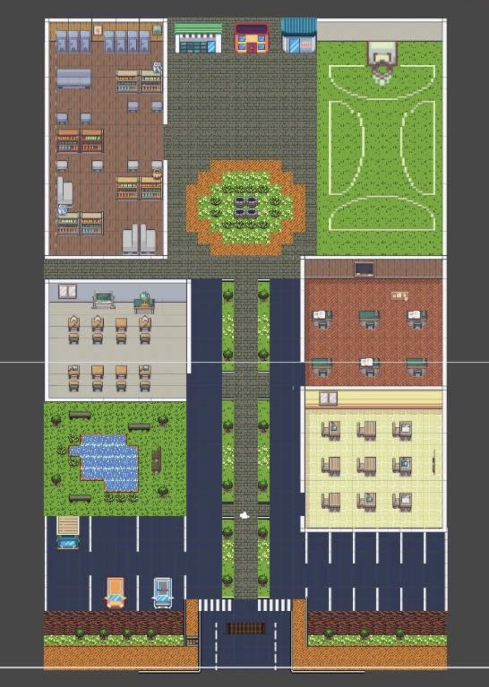

01. Pass or Die 校園逃生遊戲
專案簡介
結合時間壓力與探索機制的2D校園逃生遊戲。
我的角色
關卡設計 / 玩家流程 / 系統設計 / Unity開發
核心玩法
- 學分收集
- 時間限制
- 迷宮探索
- 隨機鑰匙
設計思考
- 時間壓力提升決策緊張感
- 隨機性增加重玩價值




02. 台灣歷史探險 VR
專案簡介
一款以台灣歷史古蹟為主題的沉浸式VR探索體驗。
我的角色
互動設計 / 玩家體驗設計 / VR場景規劃 / Unity開發
核心玩法
- 第一人稱沉浸式探索
- 歷史場景切換
- 導覽與任務引導
- 環境敘事
設計思考
- 以探索取代壓力
- 提升沉浸感與學習動機


03. Shuttle Double Worlds 雙界穿梭（遊戲企劃案）
專案類型
直向捲軸射擊遊戲企劃設計（Concept Design / Game System Proposal）
專案簡介
本專案為一款結合「現實世界／裡世界」雙層空間切換機制的射擊遊戲企劃。
玩家需透過即時切換不同世界狀態，應對敵人攻擊模式與地形變化，強調策略判斷與反應操作的結合。
負責內容
遊戲機制設計 / 關卡邏輯規劃 / 戰鬥系統設計 / 數值與難度調整
核心玩法設計
- 雙世界切換機制：玩家可即時切換現實與裡世界，改變戰場狀態
- 直向捲軸射擊系統：高節奏彈幕射擊與閃避設計
- 跨世界 Boss 設計：敵人具備不同世界的攻擊邏輯
- 成長系統設計：透過掉落資源強化武器與生存能力
設計理念
- 策略優先於反應：強迫玩家判斷「何時切換世界」
- 降低認知負擔：以顏色與視覺風格區隔雙世界狀態
- 動態難度設計：兼顧新手理解與核心玩家挑戰性